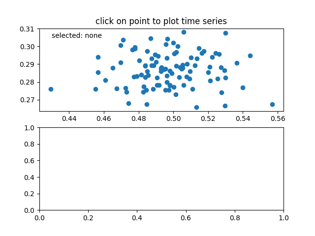

Version 3.1.0
The 2019 SciPy John Hunter Excellence in Plotting Contest is accepting submissions!
Apply by June 8th
Note
Click here to download the full example code
Connecting data between multiple canvases.
This example covers how to interact data with multiple canvases. This let's you select and highlight a point on one axis, and generating the data of that point on the other axis.
import numpy as np
class PointBrowser(object):
"""
Click on a point to select and highlight it -- the data that
generated the point will be shown in the lower axes. Use the 'n'
and 'p' keys to browse through the next and previous points
"""
def __init__(self):
self.lastind = 0
self.text = ax.text(0.05, 0.95, 'selected: none',
transform=ax.transAxes, va='top')
self.selected, = ax.plot([xs[0]], [ys[0]], 'o', ms=12, alpha=0.4,
color='yellow', visible=False)
def onpress(self, event):
if self.lastind is None:
return
if event.key not in ('n', 'p'):
return
if event.key == 'n':
inc = 1
else:
inc = -1
self.lastind += inc
self.lastind = np.clip(self.lastind, 0, len(xs) - 1)
self.update()
def onpick(self, event):
if event.artist != line:
return True
N = len(event.ind)
if not N:
return True
# the click locations
x = event.mouseevent.xdata
y = event.mouseevent.ydata
distances = np.hypot(x - xs[event.ind], y - ys[event.ind])
indmin = distances.argmin()
dataind = event.ind[indmin]
self.lastind = dataind
self.update()
def update(self):
if self.lastind is None:
return
dataind = self.lastind
ax2.cla()
ax2.plot(X[dataind])
ax2.text(0.05, 0.9, 'mu=%1.3f\nsigma=%1.3f' % (xs[dataind], ys[dataind]),
transform=ax2.transAxes, va='top')
ax2.set_ylim(-0.5, 1.5)
self.selected.set_visible(True)
self.selected.set_data(xs[dataind], ys[dataind])
self.text.set_text('selected: %d' % dataind)
fig.canvas.draw()
if __name__ == '__main__':
import matplotlib.pyplot as plt
# Fixing random state for reproducibility
np.random.seed(19680801)
X = np.random.rand(100, 200)
xs = np.mean(X, axis=1)
ys = np.std(X, axis=1)
fig, (ax, ax2) = plt.subplots(2, 1)
ax.set_title('click on point to plot time series')
line, = ax.plot(xs, ys, 'o', picker=5) # 5 points tolerance
browser = PointBrowser()
fig.canvas.mpl_connect('pick_event', browser.onpick)
fig.canvas.mpl_connect('key_press_event', browser.onpress)
plt.show()
Keywords: matplotlib code example, codex, python plot, pyplot Gallery generated by Sphinx-Gallery